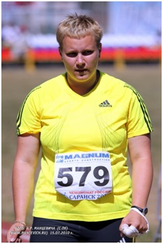

 Анна Владимировна Булгакова (род. 17 января 1988 года, Ставрополь) — российская легкоатлетка, участница Летней Олимпиады 2008 года. Метательница молота.
Мастер спорта России международного класса, Игр XXIX Олимпиады в Пекине (2008), призер чемпионатов мира среди юношей и юниоров (2005, 2006), финалист чемпионата мира (2013), призер командного чемпионата Европы (2014), призер Всемирных военных игр (2015)
На протяжении карьеры тренировалась под руководством Л. Макаровой, Е. Кривенко, Ю. Воронкина и А. Малюкова.
В 2005 году была вице-чемпионкой мира среди юношей в Марокко (62.05 м).
В 2006 году становится чемпионом России среди юниоров (64.87 м) и вице-чемпионом мира среди юниоров в Пекине (65.73 м).